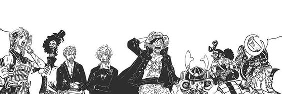
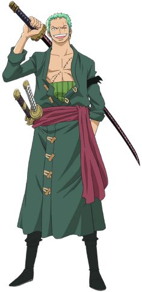
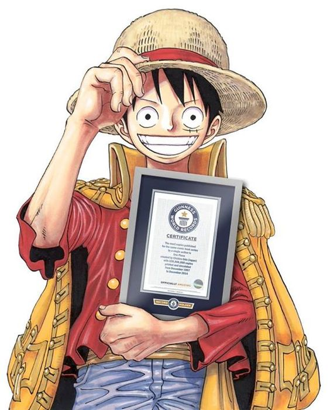

One Piece
Made By Aqil Tampan

One Piece adalah sebuah seri manga dan anime Jepang yang sangat populer, diciptakan oleh Eiichiro Oda. Manga ini pertama kali diterbitkan pada tahun 1997, sementara adaptasi animenya dimulai pada tahun 1999. Cerita One Piece berfokus pada petualangan seorang bajak laut muda bernama Monkey D. Luffy dan krunya, yang dikenal sebagai Bajak Laut Topi Jerami.
Luffy memiliki kemampuan khusus setelah memakan buah iblis yang disebut Gomu Gomu no Mi, yang memberinya kekuatan tubuh elastis seperti karet. Tujuan utama Luffy adalah menemukan harta karun legendaris bernama One Piece, yang akan memberinya gelar sebagai Raja Bajak Laut.
Jadwal OnePiece
|
| Senin |
Selasa |
Rabu |
Kamis |
Jumat |
| WIB |
10.00-10.30 |
10.00-10.30 |
10.00-10.30 |
10.00-10.30 |
10.00-10.30 |
|
WIT |
10.00-10.30 |
10.00-10.30 |
10.00-10.30 |
10.00-10.30 |
10.00-10.30 |
|
WITA |
10.00-10.30 |
10.00-10.30 |
10.00-10.30 |
10.00-10.30 |
10.00-10.30 |
Karakteristik

Roronoa Zoro, atau sering disebut Zoro, adalah salah satu karakter utama dalam One Piece dan merupakan pendekar pedang di Bajak Laut Topi Jerami. Dia adalah anggota pertama yang bergabung dengan kru Monkey D. Luffy. Zoro dikenal karena keterampilannya dalam menggunakan pedang, khususnya teknik Santoryu (tiga pedang), di mana dia bertarung dengan dua pedang di tangan dan satu di mulutnya.
Tujuan utama Zoro adalah menjadi pendekar pedang terkuat di dunia. Untuk mencapai mimpinya, dia harus mengalahkan Dracule Mihawk, yang saat
.jpeg "Zoro") Sanji, atau dikenal juga sebagai Black Leg Sanji, adalah salah satu karakter utama dalam seri One Piece. Dia adalah koki di kru Bajak Laut Topi Jerami yang dipimpin oleh Monkey D. Luffy. Sanji memiliki keterampilan memasak yang luar biasa, dan salah satu mimpinya adalah menemukan All Blue, sebuah laut legendaris yang dikatakan sebagai tempat bertemunya semua lautan di dunia, sehingga memiliki berbagai jenis ikan dari setiap wilayah.
Sanji memiliki ciri khas sebagai pria yang selalu tampil rapi dengan setelan jas, serta gaya rambut pirang yang menutupi salah satu matanya. Dia juga terkenal dengan kebiasaannya merokok.
Sanji, atau dikenal juga sebagai Black Leg Sanji, adalah salah satu karakter utama dalam seri One Piece. Dia adalah koki di kru Bajak Laut Topi Jerami yang dipimpin oleh Monkey D. Luffy. Sanji memiliki keterampilan memasak yang luar biasa, dan salah satu mimpinya adalah menemukan All Blue, sebuah laut legendaris yang dikatakan sebagai tempat bertemunya semua lautan di dunia, sehingga memiliki berbagai jenis ikan dari setiap wilayah.
Sanji memiliki ciri khas sebagai pria yang selalu tampil rapi dengan setelan jas, serta gaya rambut pirang yang menutupi salah satu matanya. Dia juga terkenal dengan kebiasaannya merokok.

Monkey D. Luffy adalah karakter utama dalam seri One Piece. Dia adalah kapten dari Bajak Laut Topi Jerami dan terkenal karena ambisinya untuk menjadi Raja Bajak Laut dengan menemukan harta karun legendaris, One Piece, yang tersembunyi di lautan terakhir, Grand Line.
Luffy memiliki kekuatan khusus setelah memakan buah iblis Gomu Gomu no Mi, yang membuat tubuhnya memiliki sifat elastis seperti karet. Kekuatan ini memberinya kemampuan untuk meregangkan tubuhnya, menahan pukulan, dan menciptakan serangan kuat berbasis elastisitas,
Episode 1